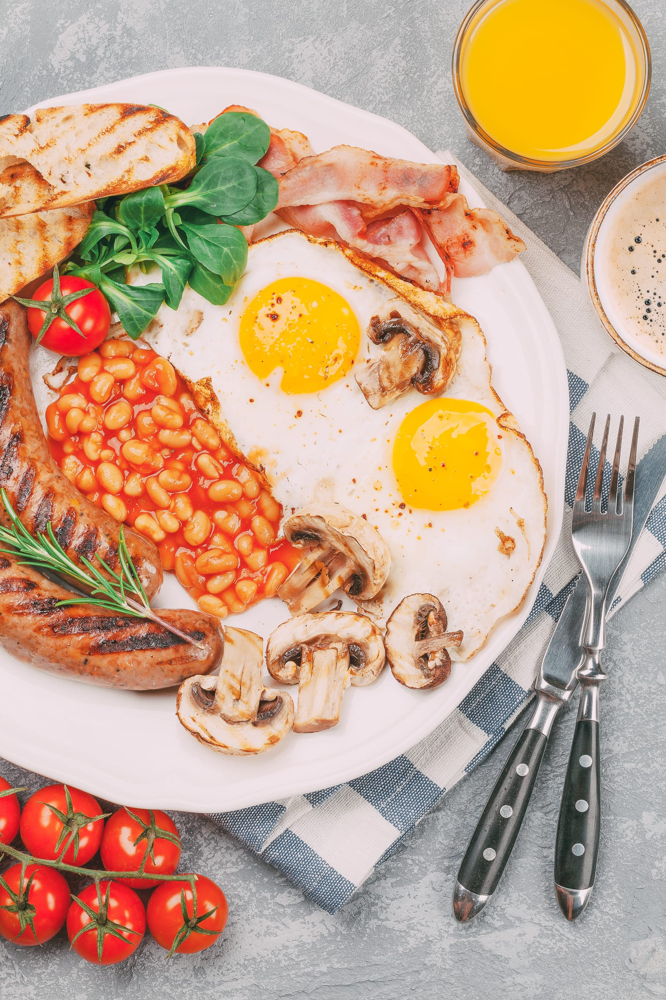

|
|
Home Page | Culture | Food | Summary in Spanish | Monarchy | About Us | Contact Us |
FOOD

| British people enjoy a wide variety of traditional dishes that are often served in cafes, pubs, and resturants across the country. Here are some of the most popular traditional British foods: | ||
| Haggis, Neeps, and Tatties | Toad in the Hole||
| Bangers and Mash | Black Pudding | |
| Welsh Cawl | Yorkshire Pudding | |
| Spotted Dick | Scotch Egg | |
| Shepherd's Pie/Cottage Pie | Bubble and Squeak | |
| Beef Wellington | Cornish Pasty | |
| Fish and Chips | Jellied Eels | |
| Chicken Tikka Masala | Pie and Mash | |
| Steak and Kidney Pie | Eton Mess | |
| Full English Breakfast | Sunday Roast | |
| Each region of the UK has its own distinct cuisine | ||